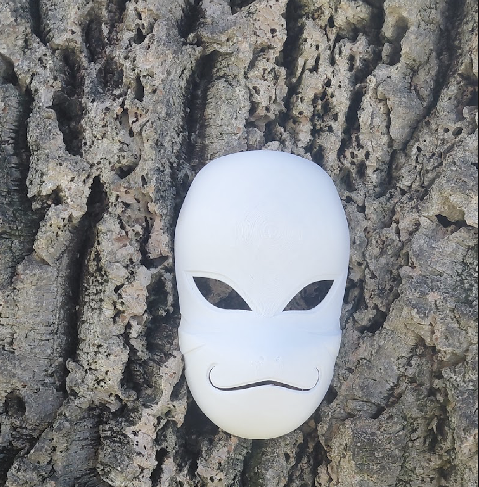

My Artworks
Here are three projects that show my interest in digital art, design, and 3D modeling.
1. Naruto ANBU Mask

Medium: 3D digital modeling
I created a 3D ANBU mask inspired by Naruto. I focused on the shape and details to make the mask look interesting and realistic.
2. Glitch Art

Medium: Digital image editing
My glitch art explores phone use, notifications, and how technology can distract us from real life. I used digital effects to express this idea.
3. Blender 3D Gaming Setup

Medium: Blender 3D modeling
I created a 3D gaming setup with a computer, desk, and other details. This project helped me practice modeling objects and arranging a digital scene.
Artist Statement
I am a Digital Media Arts student who enjoys video editing, digital design, and 3D modeling. I like experimenting with effects, colors, and details to make my work more interesting.
My projects are inspired by anime, technology, and everyday life. I want to keep improving my skills and explore motion graphics, animation, and 3D design.
CV
Education: San José High School, graduated 2026
Current Study: Digital Media Arts, San José State University
Skills: Digital art, video editing, Illustrator, Photoshop, and Blender
Experience: Personal digital art projects and creative experiments
Contact
I am interested in digital art, animation, and creative projects.
Email: Add your preferred contact email here.